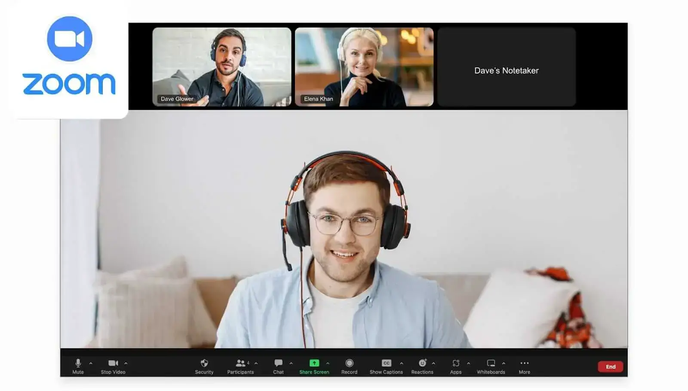
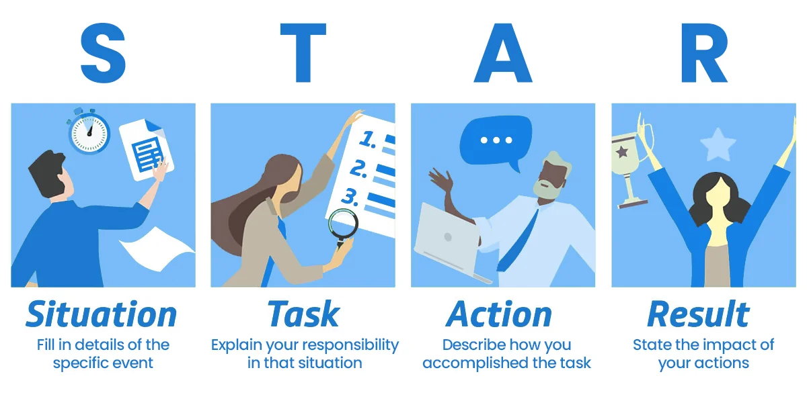

Core Features
Designed for Real Interview Readiness

Resume-Based Personalization
Resume-Based Personalization
The app uses the uploaded resume and job description to create highly relevant interview questions.

Zoom-Native Experience
Zoom-Native Experience
Users launch the app directly inside a Zoom meeting, creating a realistic interview environment.
AI-Generated Questions
AI-Generated Questions
Smart interview questions are generated based on role, skills, and career goals.

STAR Method Feedback
STAR Method Feedback
The app provides structured feedback using the Situation, Task, Action, and Result framework.
Improvement Insights
Improvement Insights
Users receive strengths, weak areas, and actionable tips to improve future interview performance.
Career-Focused Impact
Career-Focused Impact
Built to help students and professionals secure internships, jobs, and dream career opportunities.